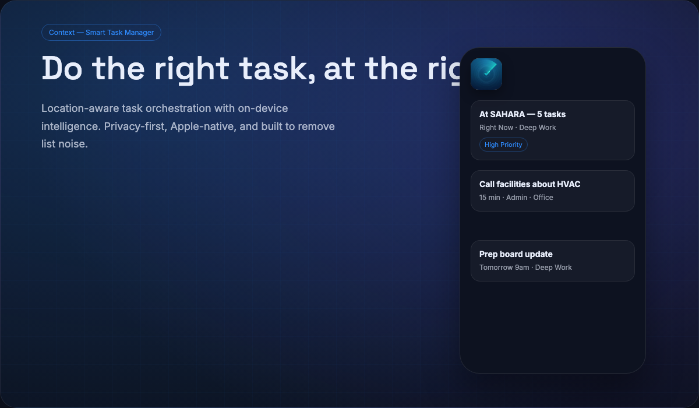

Context — a task manager that knows what matters now.
Context is a native Apple‑ecosystem productivity app that surfaces the right tasks based on location, time, and energy. Stop managing lists and start doing the work.
Join the early access listPrivacy‑first. No data collection. All processing on‑device with private iCloud sync.
- Location‑aware task orchestration
- Natural‑language capture
- Mac, iPhone, iPad, Watch
Why Context
Context reduces the cognitive load of task management by showing only what’s relevant in the moment — based on where you are, what’s due, and your energy level.
Location‑Aware Orchestration
Tasks surface automatically when you arrive at the right place, with configurable geofences and intelligent lookahead.
Natural‑Language Capture
Type or dictate tasks in plain English. Context parses dates, priority, energy, and location — on‑device.
Privacy‑First
On‑device NLP and private iCloud sync. No analytics, no third‑party SDKs, no data collection.
Built for the Apple Ecosystem
macOS, iOS, iPadOS, and watchOS — designed to feel native everywhere you work.
Energy‑Based Focus
Filter by Deep Work, Quick Win, or Admin to match your current capacity and momentum.
Launch Target
Public launch planned for Q2 2026. Early access list opens soon.